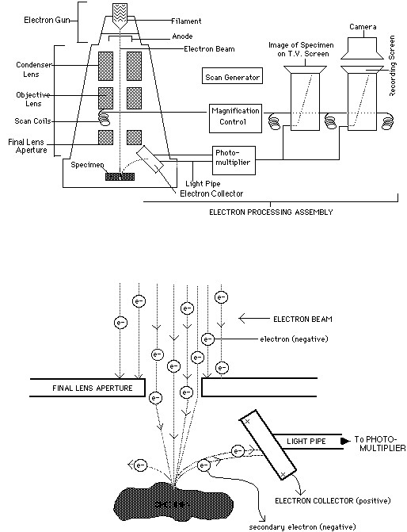
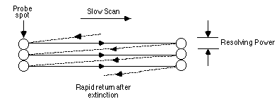
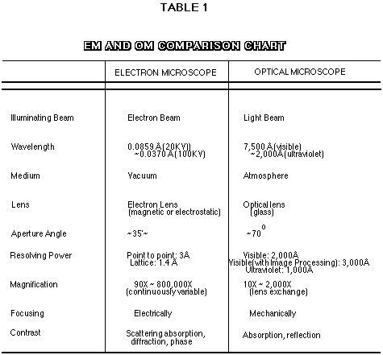

An electron microscope is an electron accelerator that focuses the electron beam with the aid of electromagnetic lenses. The accelerating voltage is typically in the range of 60-100 keV. The illumination source is a tungsten filament, also known as the electron gun, which is heated to a high temperature (2700deg.K) causing electrons to be released from the tip of the filament. Lenses focus the electron beam and magnify the image after the electrons pass through the specimen. The lenses and the specimen stage are mounted in a vertical, lead-lined cylindrical column that allows the interior to be maintained under vacuum. The vacuum is needed so that the electrons do not collide with air molecules and get knocked off course before they reach the specimen. A good vacuum is required (10-7 torr) since the mean free path of an electron is 125 cm in a vacuum of 10-4 torr.

In the scanning electron microscope (SEM), a beam of accelerated electrons is used to image surface features of specimens. The surface topography of a specimen is generated by the electrons reflected (backscattered) or given off (secondary electrons) by a metal-coated (gold or gold-palladium) specimen struck by the electron beam. This is accomplished by focusing a narrow, intense beam of electrons to form a very small spot of illumination (between 2Å & 200Å diameter) on the specimen. This fine spot is then moved sideways by deflecting the beam so that a very narrow ribbon of specimen, whose width corresponds to the diameter of the spot, is traversed by the electron probe spot.

The probe spot is then returned very rapidly to a point on the specimen one spot diameter above or below the original starting point, and the adjacent ribbon of specimen is then traversed. The process is repeated until the whole area of the specimen has been covered by this "scanning" probe spot of electrons. The pattern of lines is called a raster, and is just like the ones seen on the screen of a television set. A visual image corresponding to the signal produced by the interaction between the beam spot and the specimen at each point along each scan line is simultaneously built up on the face of a cathode ray tube (CRT) in the same way as a television picture is generated (Fig. 1). The specimen image then appears in a similar way to the pictures seen on a black & white television screen.
Resolving Power in the Electron Microscope
The physical principles of optics and wave mechanics that define the operation and limits of the light microscope apply as well to the electron microscope, the major differences being the use of electromagnetic lenses instead of glass and the wavelength of the light -- or more accurately, the electromagnetic radiation -- illuminating the specimen.
The resolving power (R) of a lens is the ability of the optical (or electromagnetic) lens to resolve two very close, but distinct, particles into an image in which the particles are viewed as separate rather than one. Resolving power is limited by the wavelength ([[lambda]]) of the illumination and the numerical aperature (NA) of the light-gathering, or objective, lens. This relationship, defined by Ernst Abbé, can be expressed mathematically as: R = 0.61 [[lambda]]/NA. Thus, using an objective lens with a numerical aperture of 1.4, the limit of resolution for a light microscope using visible light ([[lambda]]avg = 550nm) is ~0.2 mm (or 200 nm). The effective limit to useful magnification in a light microscope, in turn, is roughly 1000-1500 times, beyond which point the limit of resolution offsets the gain in information obtainable by magnification; that is, the objects in view increase in size with increasing magnification, but appear as one (large) particle rather than two distinct particles.
Electrons are charged particles that display the wave properties of electromagnetic radiation. According to de Broglie's equation, the wavelength of an electron is inversely related to the speed (V) at which it travels: [[lambda]] (nm) = 1.23/[[radical]]V. The speed of electrons emitted by a cathode (the electron gun in the EM) is directly related to the potential (accelerating voltage) applied by the anode to the beam of electrons. Electrons that have been accelerated by V volts have an energy of V electron volts (eV). Thus, the higher the accelerating energy applied, the faster the electrons travel and the smaller the wavelength of the electrons.

{kind=link}